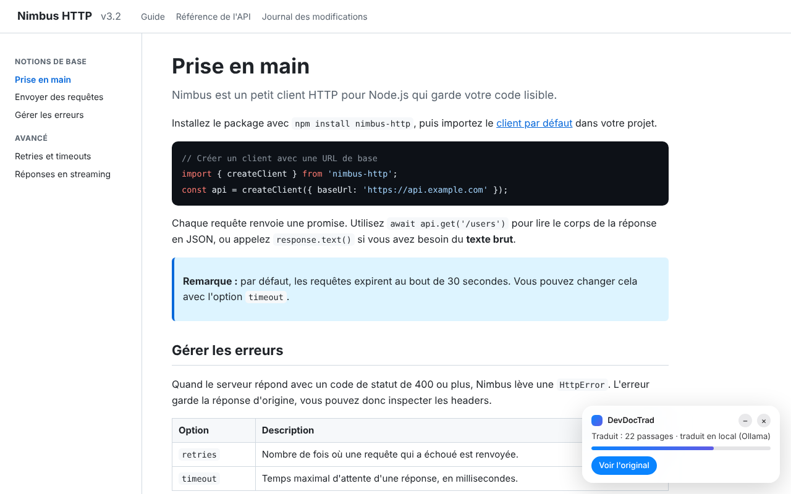

忠實翻譯
逐句翻譯，順序不變，不摘要、不省略、不添加。擴充功能只翻譯，不解釋。
將技術文件與給程式設計師的網站忠實翻譯成你的語言，絕不更動程式碼。

獻給所有被外語文件困擾的人：官方文件、GitHub 的 README 與 issue、Stack Overflow、論壇、技術部落格、研討會演講。
逐句翻譯，順序不變，不摘要、不省略、不添加。擴充功能只翻譯，不解釋。
指令、函式、API、路徑和 URL 絕不翻譯。連結、粗體和程式碼區塊都留在原處。
預設使用瀏覽器語言，支援 37 種語言。俄羅斯開發者看到俄語，日本開發者看到日語。
教學與演講：字幕直接在影片上即時翻譯，包括 YouTube。沒有字幕？語音免費轉寫（Groq Whisper）。可選擇朗讀。
使用 Gemini、Groq、Mistral、OpenRouter 的免費額度，或本機的 Ollama。付費金鑰在你設定上限之前一律鎖定。
取代原文，或在每句下方顯示譯文。點一下或按 Alt+Shift+T 即可回到完全相同的原文。
無統計，無追蹤。金鑰保存在你的瀏覽器中。敏感頁面絕不自動翻譯。


在上架商店之前，只要點幾下就能手動安裝。
chrome://extensions（或 edge://extensions、brave://extensions）。about:debugging#/runtime/this-firefox。:free 模型），或安裝 Ollama。沒有字幕的影片語音請使用 Groq。是的。擴充功能免費且開源。它在服務商的免費額度上使用你自己的金鑰，或使用你電腦上的 Ollama。它絕不會切換到付費金鑰，而付費金鑰在你親自設定每日上限之前一律鎖定。
內建翻譯會把函式名稱、指令甚至程式碼也翻掉，還常常破壞版面。DevDocTrad 能辨識程式碼、識別碼和 URL 並且絕不更動，保留連結和格式，還能並排顯示原文和譯文。
在彈出視窗中開啟「翻譯影片中的語音」，或按 Alt+Shift+V。如果影片有字幕（YouTube、演講、課程），字幕會被翻譯並顯示在畫面上。否則，聲音會被切成幾秒鐘的片段，由 Groq Whisper 使用你的免費 Groq 金鑰轉寫，再進行翻譯。喇叭按鈕會用瀏覽器的語音朗讀譯文。完全不用付費。
金鑰只保存在瀏覽器的本機儲存空間，從不同步，只傳送給對應的服務商。它們絕不會出現在 URL、記錄或傳給網頁的訊息中。
只傳給你選擇的服務商，使用 Ollama 時則哪裡也不去。在免費額度下，Google 和 Mistral 可能會重複使用文字：私人頁面建議使用 Ollama。語音方面，只有很短的音訊片段會傳給 Groq。
37 種目標語言，包括繁體中文、簡體中文、英文、法文、西班牙文、德文、俄文、日文和阿拉伯文。頁面可以是任何語言。擴充功能介面提供 36 種語言（阿拉伯文、希伯來文和波斯文由右至左顯示），並跟隨瀏覽器語言。本網站也提供 37 種語言。
可以，MIT 授權：只要保留授權聲明，你就可以使用、修改和再散布。